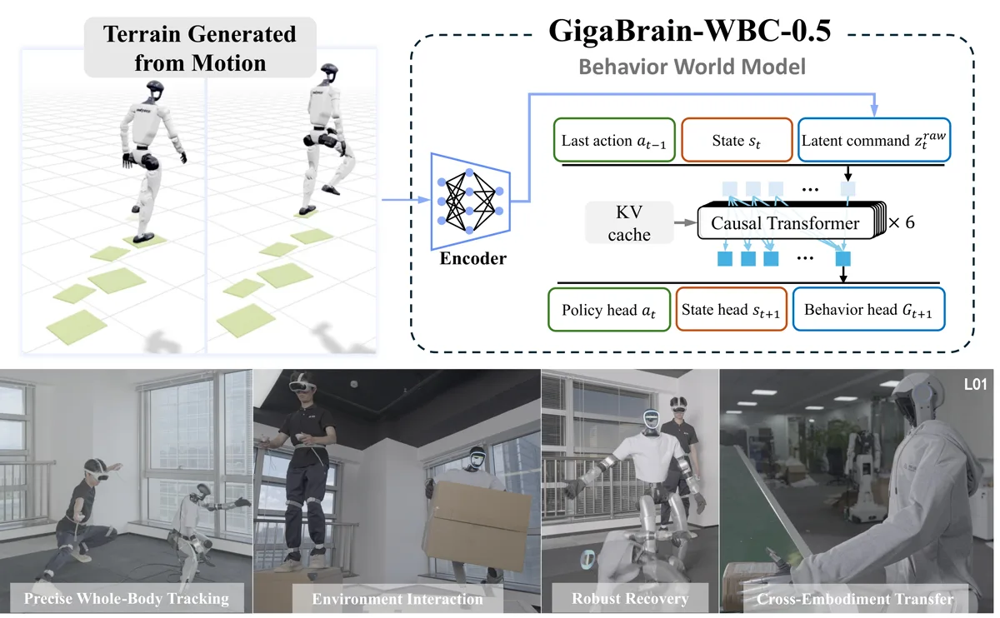

Robotics · Machine Learning
Ziyang Cheng
Ph.D. Student in Electronic Information at Tsinghua University
I am a first-year Ph.D. student in the Department of Automation at Tsinghua University, advised by Prof. Jiwen Lu.
Before that, I completed my undergraduate studies at Tsinghua University (2022–2026), earning bachelor's degrees in Mathematics and Physics & Mechanical Engineering.
I work on robotics and machine learning. My current research focuses on:
- Whole-Body Control for Legged Robots, studying coordinated whole-body behaviors for loco-manipulation.
- Humanoid Teleoperation, developing intuitive teleoperation systems that transfer human intent to humanoid robots.
- Safe and Robust Robotics, addressing both physical and semantic safety for robots operating in complex environments.
Updates
News
-
Released the technical report for GigaBrain-WBC-0.5: A Behavior World Model for Robust Whole-Body Control with Environment Interaction.
Selected work
Publications
Get in touch